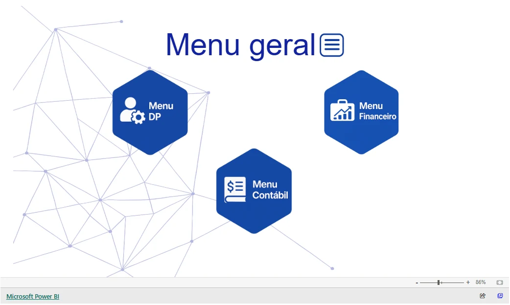

Data Integration · BI
Operational Analytics
From fragmented sources to a reliable operational data layer.
01 / Context
The setting and the scope.
Developed in a professional accounting context to centralize operational data and support reporting on tasks, teams, deadlines and client onboarding.
02 / Problem & objective
What needed to be solved.
Fragmented information and manual consolidation made operational reporting harder. The solution needed to prepare dashboard data and preserve the latest valid publication if a processing stage failed.
03 / Architecture & development
From source to delivery.
- 01Gestta / Notion
- 02Python + validation
- 03PostgreSQL + views
- 04Files + manifest
A simplified reading guide. Repository documentation describes contracts, sources, stages and reproduction.


04 / Challenges & decisions
Decisions behind the solution.
- The pipeline coordinates extraction, validation, transformation and loading within the same run.
- CNPJ identifiers remain text; extraction failures and invalid contracts stop publication.
- PostgreSQL transactions and locks protect tables and views; a hash manifest identifies confirmed files.
- Power BI refresh is optional and requests an update without confirming its completion.
05 / Results & evidence
What can be reviewed.
In the original professional context, consolidation went from approximately five days to about five minutes, as reported by the author. The public demonstration supports a different scope: the technical pipeline, synthetic data, validation and tests.
Public evidence
Documentation records 72 tests, including 14 with real PostgreSQL, and a synthetic demonstration. The main-branch workflow was successful when checked on 21 October 2026.
Evidence checked on 21 October 2026. Project tests were not rerun during this website implementation.
06 / Limitations
The boundaries of this work.
The public distribution does not include corporate PBIX files or DAX measures. It does not implement incremental loading or a distributed transaction across the database and files. Corporate integrations and authenticated browser sessions have not been revalidated.
Let’s connect
The next challenge
in data and business.
I am exploring Data Analyst, BI Analyst and Data Scientist opportunities, as well as hybrid roles across these areas.